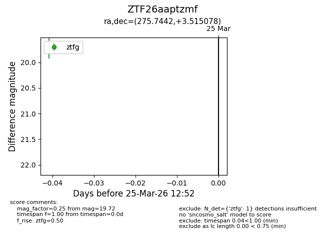
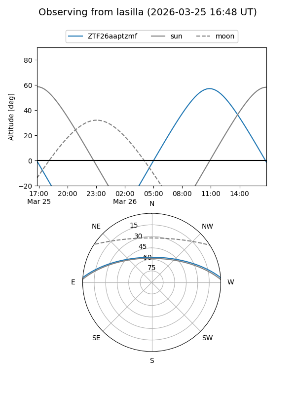
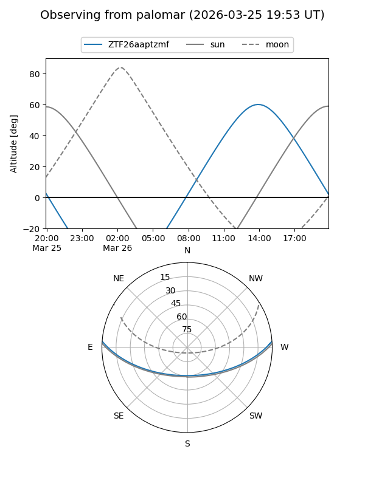

ZTF26aaptzmf
Target ZTF26aaptzmf at 2026-03-25 12:54
Aliases and brokers:
FINK: link
Lasair: link
ALeRCE: link
alt names
ZTF26aaptzmf (ztf,fink_ztf)
Coordinates:
equatorial (ra, dec) = 275.7442,+3.51508
equatorial (HMS+DMS) = 18:22:58.62,+03:30:54.28
galactic (l, b) = (32.8273,+7.93144)
Flags:
Photometry:
last ztfg=19.72
1 ztfg detections
Lightcurve

Visibility


Additional plots